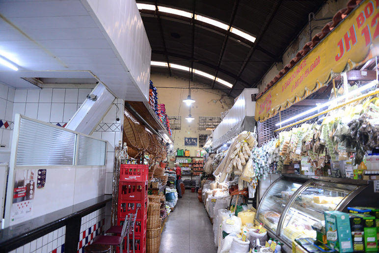

Com reforma no papel, mercado vive em situação precária
O Mercado Municipal de Americana está em condições precárias e uma reforma anunciada há dois anos nunca saiu do papel. Goteiras, fios elétricos soltos, paredes emboloradas e vidros quebrados são problemas que se acumulam no prédio, que é propriedade da prefeitura e é alugado a comerciantes. Em 2015, uma ampla intervenção no local foi anunciada pela administração em conjunto com a ALL (América Latina Logística), mas com a incorporação da concessionária pela empresa Rumo, as melhorias acabaram não sendo realizadas.
Leia toda a notícia clicando aqui